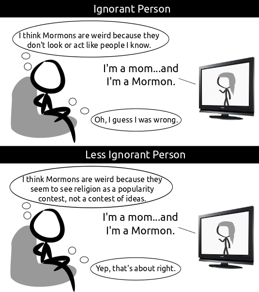

Comic JK 739
When I Feel Like It
⇤
<
?
>
⇥

⇤
<
?
>
⇥
Forum
.
RSS
.
Digg
.
Facebook
.
Reddit
.
Twitter
.
Stumbleupon
Enter your thoughts on number 739 here. Please, no spamming, trolling, phreaking, or Mormonism. RABBLE RABBLE RABBLE Aren't the Ignorant People like, 99% of the people you know? > Maybe just the ones you know. Anyone who is part of any religion is automatically ignorant. >It's correlated, but not causal. >>With Pastafarianism it is causal. >>>RAmen! >>>I don't consider myself ignorant. /hasty generalization >>>>I'd say that anybody that is alive is automatically ignorant. I'm sure, that within 6 questions, asked to any individual, I'd get at least one that they can't answer. And that's not getting to questions that the human race have yet to find answers for. >>>>>Beauty of ignorance is that accurate use of the term presupposes that the person can better his/herself, they simply lack knowledge. But I've never met a Mormon who suggested the above idea to me. The purpose of this set of ads is to remove the bizarreness that Mormonism represents, cause plenty of people still look at it like they did a century ago. >>>>>Hah! I can find something other people don't know with just 1 question. Let religious people believe what they want to believe, otherwise you're as bad as a hardcore religious person. >what if "what they want to believe" includes the belief that performing human sacrifice is a necessary activity... ? >>you mean it isn't?!? >>>Weekly in my case. Getting harder to find virgins though. For those "religions are all garbage" people, I contend that there are many non-religious people who satisfy same FLIP of psychological needs from other sources. People worship pop-culture like religion - people worship rock and roll like religion - people worship dance culture like religion (trust me, they are very very similar in the ritualistic/community clique aspect). People even worship political/social ideologies and political parties like religions. All of these things help people feel like part of a group and help them make decisions. Are worshiping these things better? No matter how you look at these things, there are always a few practitioners who dictate ideas for hoards of followers - whether it's officially a religion or not. For people who NEED religion, many believe that people cannot have positive morals without religion, and for that reason, I'm very glad that they DO have religion. Please, don't blame the followers - they're just naive sheep after all. Just hope that the practitioners actually want to help people and aren't corrupt. >I've realized years ago that religion has little to do with beliefs, and is more about pack-mentality, rituals, and deferring life decisions and responsibility to another party. Belief is largely irrelevant. >> I agree >>For ignorant people. >>That is at the core of most "belief systems" - be they political, social or religious, they're all about deferring responsibility. Whether it's to a higher power, a political leader, or some role model or belief system, the principle is the same. We all want to avoid responsibility. >>>I think that's what defines a leader - somebody who is willing to take responsibility. And that's why good leaders are so rare. >Unfortunately the comparison fails because pop-culture worshippers and dance culture worshippers don't get tax breaks for their organisation, nor do they try to force their beliefs into science classes in schools. >>+1 All this talk of the gullible following a messianic figure, and no-one has yet mentioned Apple... ? or is there an app for that... ? >Apple is just too flipping obvious to mention >>( and that, boys and girls, is the new Apple ad slogan... ) The Reformed Church of Athena teaches that the goddess Athena gave humanity coffee, beer and rock & roll, and becoming a member involves no change in one's beliefs, attitudes, behavior or lifestyle... Pastebin link for some php code I just wrote in a couple minutes that generates a ComicJK archive, it loads all the pages in order so its a little slow, but it works. pastebin.com/mw0kFshm (I advise saving the result of it if you want an archive) Interesting definition of an 'ignorant' person. It seems that if one is ignorant of one fact, they must therefore be Ignorant in general. As such, one who is 'ignorant' of what Mormonism entails would be accurately depicted by the top frame. However, I would not say the second frame's individual is any less ignorant about Mormonism, just ignorant in a different way and with a condescending attitude. If he actually cared to learn about Mormonism, he'd see it is the furthest thing from a popularity contest: See their stance on gay marriage, abortion, even female leadership. So what about those who treat science in exactly the same way someone else might treat their religion? Don't tell me it doesn't happen, and more often than scientific people want to admit.